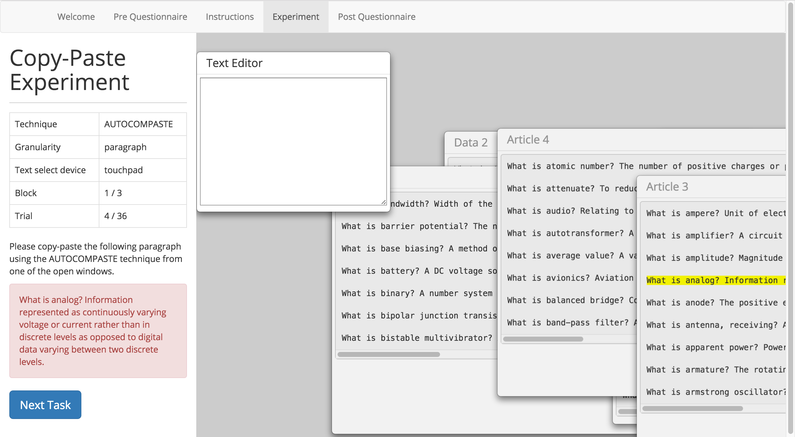
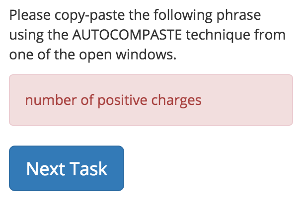
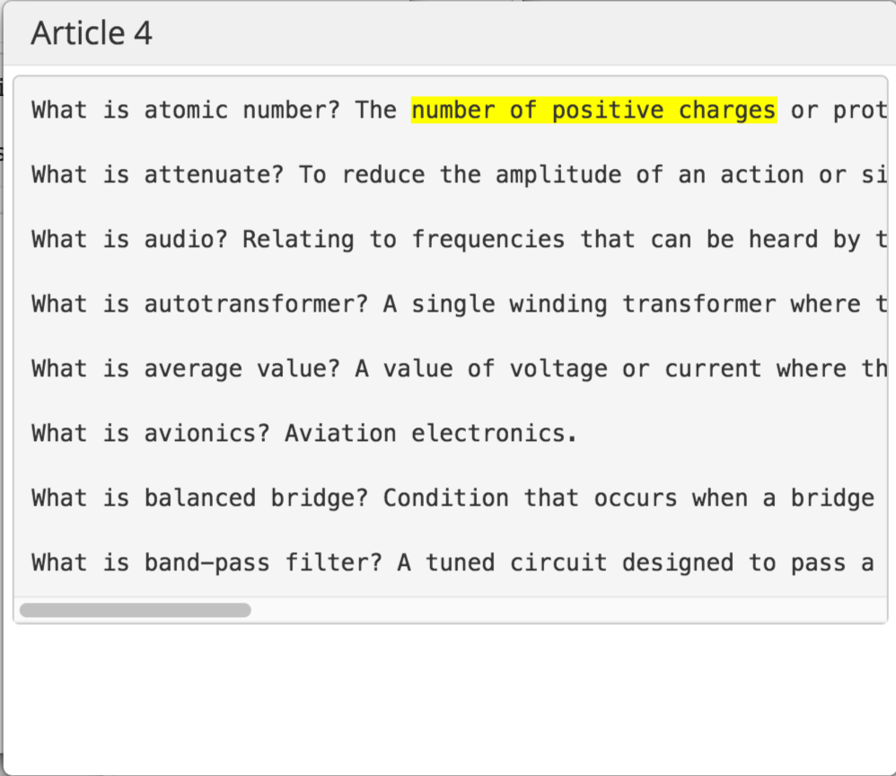
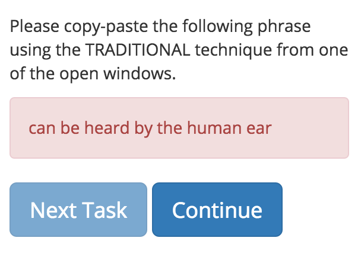

Dear participant , please read the instructions before the experiment.
In this experiment, you are required to use 2 different techniques to copy paste some phrases, sentences or paragraphs. The 2 techniques you will be using in the experiment are: AutoComPaste and Traditional techniques.
Below is a screenshot of the experiment interface.
The screen is split into two sections, the left section contains the conditions of the experiment while the right section contains the text editor window and the windows containing text.
**Left Section**
From the left panel, you will see a table showing the experiment requirement for each task. For Technique, which will be either AutoComPaste or Traditional; this shows the technique you are going to use in that particular task. For Granularity, which will be either phrase, sentence or paragraph; this shows the granularity of the texts you are going to copy in that particular task. For Text Select Device, which will be either touchpad or mouse; this shows you the device you are going to use to select text or do any other possible operation during that particular task. For Block and Task, they are showing your current progress.
Below the table, you will see a red block with red text, which will be the text you are going to copy paste in that particular task. After you have done, click “Next Task” button to go to next task.
**Right Section**
 There are two kinds of windows in the right section: 1) Text Editor window and 2) Articles window. The Text Editor window is meant for you to enter your response to the stimuli using either one of the proposed copy-pasting techniques. The Articles windows contain text in various forms (point-form / essay). The text corresponding to the stimuli will be highlighted in yellow for easy identification in the cases of the TRADITIONAL copy-pasting technique.
When the AUTOCOMPASTE technique is active, typing three characters or more in the Text Editor will show a dropdown list of possible sentences that contain the characters/sentence that you have just entered, which are extracted from the contents of the open windows. Pressing the ↑ / ↓ buttons on the keyboard will scroll through the list of suggestions. Press enter to select a suggestion and the text editor will display the full selected sentence.
After selecting a sentence, pressing ← / → button right after pressing enter, you can delete/append the next few sentences of the article to the Text Editor. Pressing enter or space would mean pasting the final text to the system.
When the TRADITIONAL technique is active, simply use the Ctrl-C Ctrl-V method to do the copy -paste.
The will be 3 sections each with 36 tasks. After finish every section, you can take a break. A “Continue” button will appear next to the “Next Task” button. Once you feel like to continue to the next section, click the “Continue” button to continue.